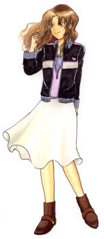

バリケンピンク 華子

名前 / 年齢
華乃さくら（かのさくら） / 25歳
誕生日 / 血液型
9月17日 乙女座 / Ａ型
職業
美容師
家族構成
父、母、弟・義信、犬・小ピピン
バリケンジャーのリーダー補佐を勤める頼れるお姉さん。
おっさんのセクハラ行為やはくさいの熱烈アタック（笑）にも負けず、
頼りないおっさんをサポートしながらバリケンジャーを支えている。
紅茶やコーヒーに詳しく、ティーカップ集めが趣味。
そろそろ結婚が気になるお年頃だったり(笑)